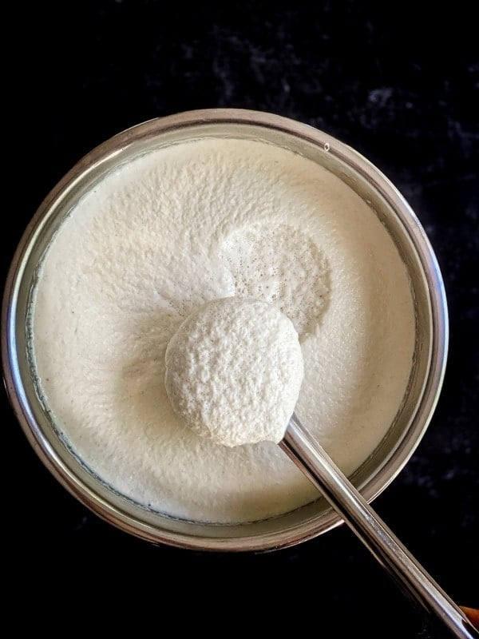
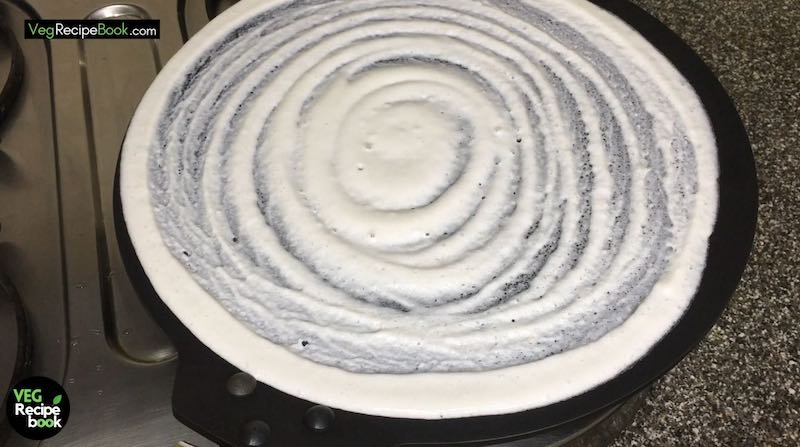

STEPS TO PREPARE DOSA
- Batter Preparation
- Take two bowl of Raw Rice
- urad dal of 1/2 cup
- salt 1/2 spoon
- Soak all the ingredients in water for 6-7 hrs
- After 6 hrs of soaking process Gring it well
- Leave it for the over nigth for perfect Batter

- DOSA MAKING
- Heat the Tawa (Pan):
- Place the tawa on medium heat.
- Sprinkle a little water — if it sizzles and evaporates quickly, the pan is ready.
- Wipe it gently with a cloth or onion slice for even cooking.
- Pour and Spread the Batter:
- Pour 1 ladle of dosa batter onto the center of the hot tawa.
- Immediately spread it outward in a circular motion with the bottom of the ladle, making a thin round shape.

- Drizzle Oil or Ghee:
- Drizzle ½ tsp oil or ghee around the edges and top of the dosa.
- Cook Until Crispy:
- Let it cook uncovered for 1–2 minutes until the bottom is golden brown and crispy.
- The edges will lift slightly — you can now loosen and lift it with a flat spatula.
- Fold and Serve:
- You can fold the dosa in half or roll it.
- Serve hot with coconut chutney, tomato chutney, or sambar.